H01 - Taquería Callejera
Estado: ESPERANDO APROBACIÓN PILOTO
Revisión inicial del concepto "El Momento Guau". 12 piezas representativas. Cero IA hiperrealista 3D. Fotografía documental publicitaria.
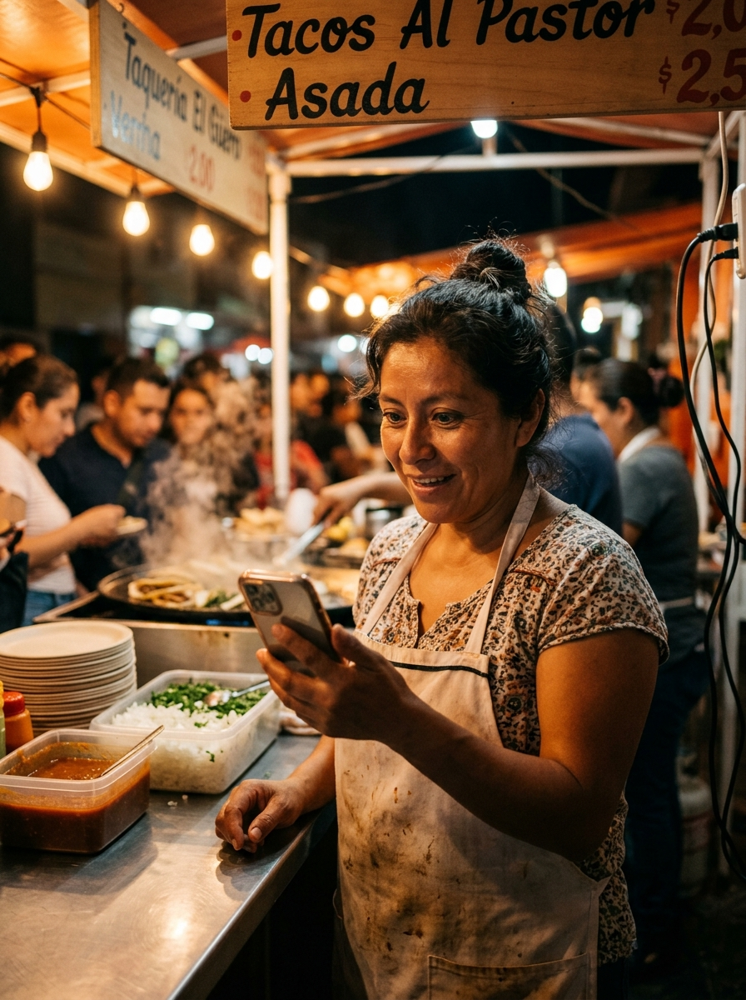
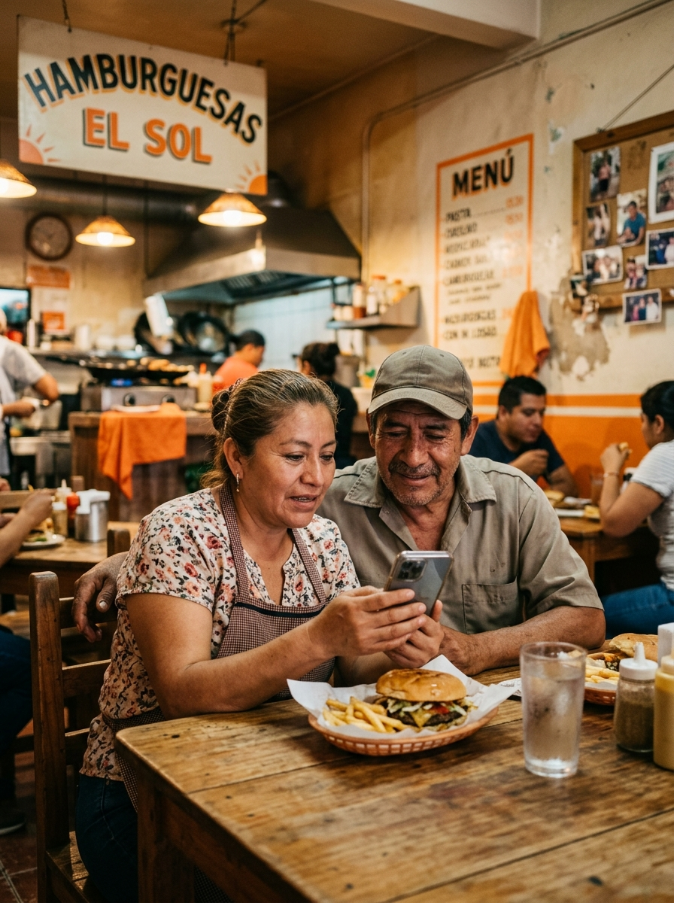
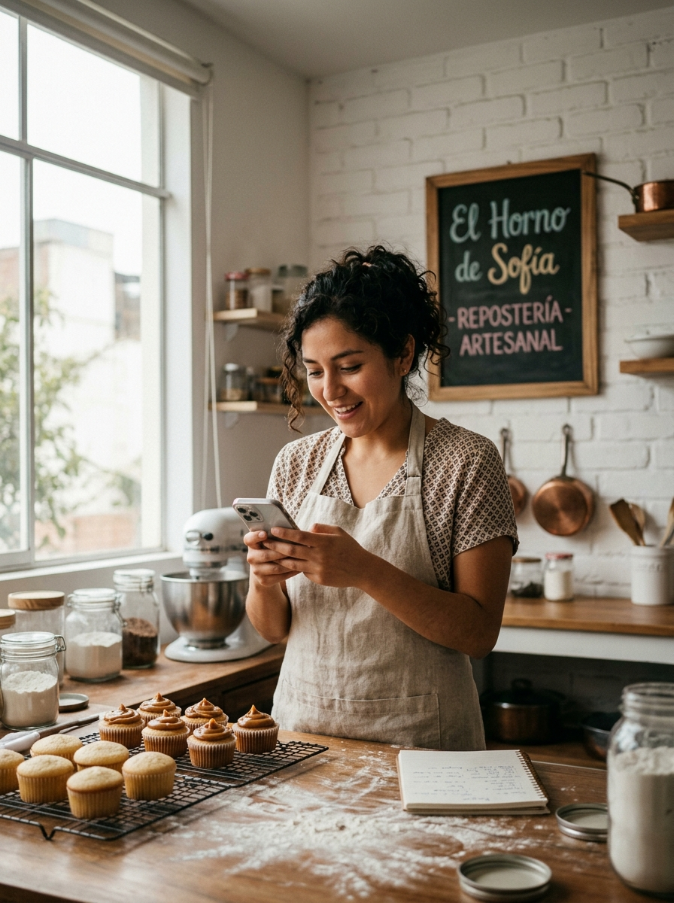
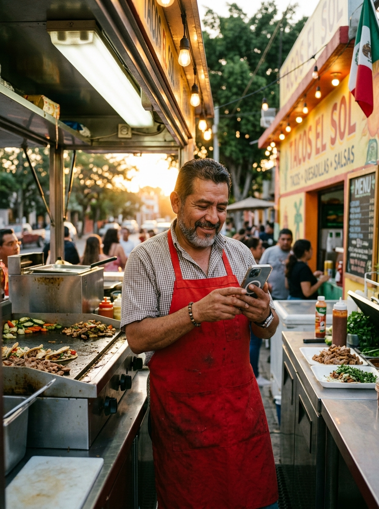
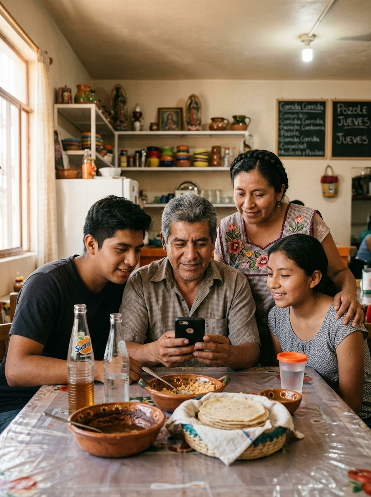
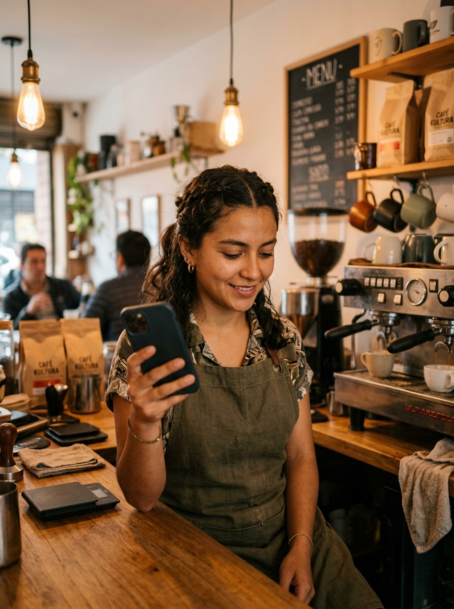
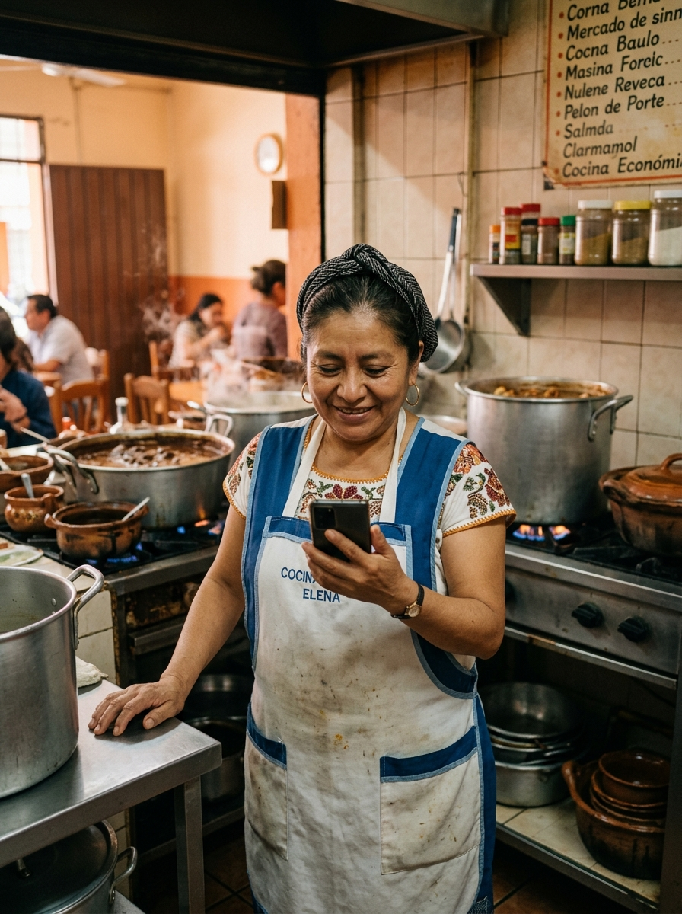
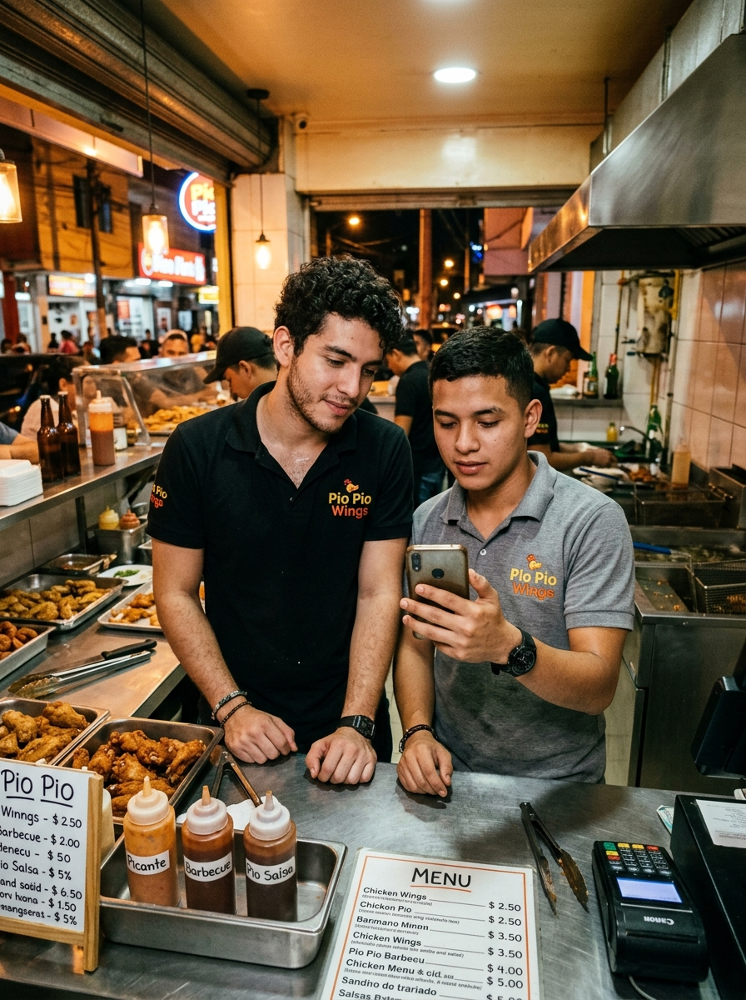
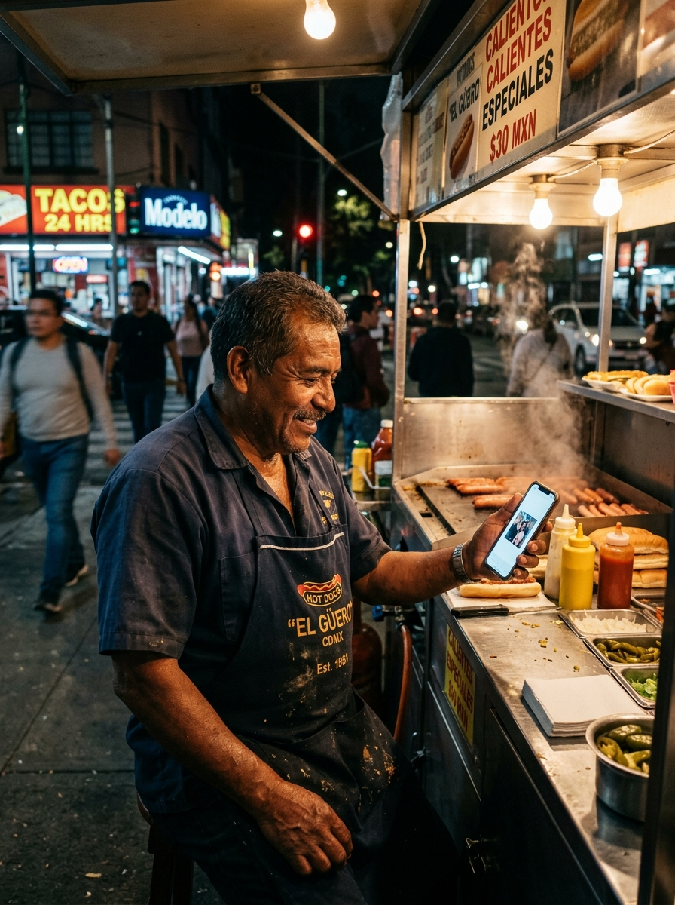
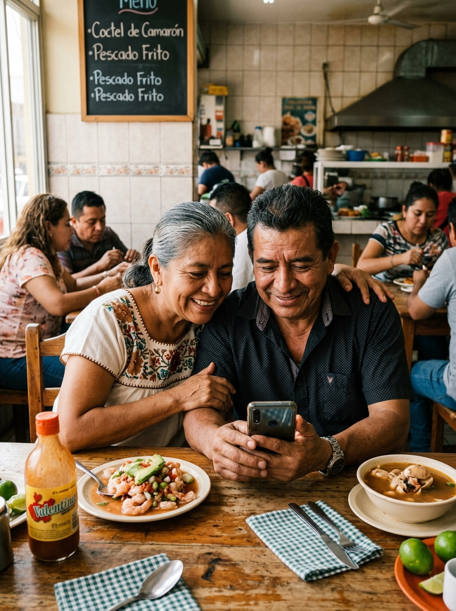
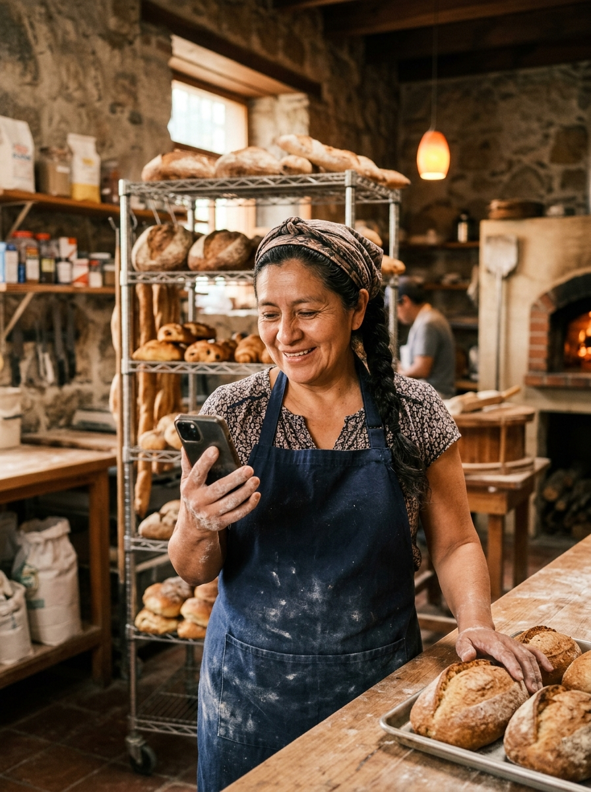
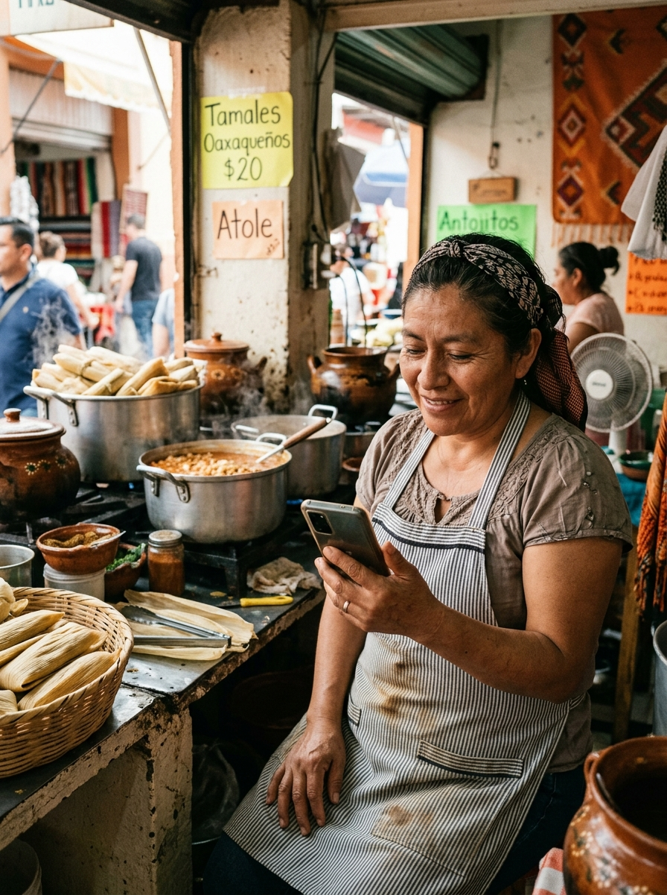